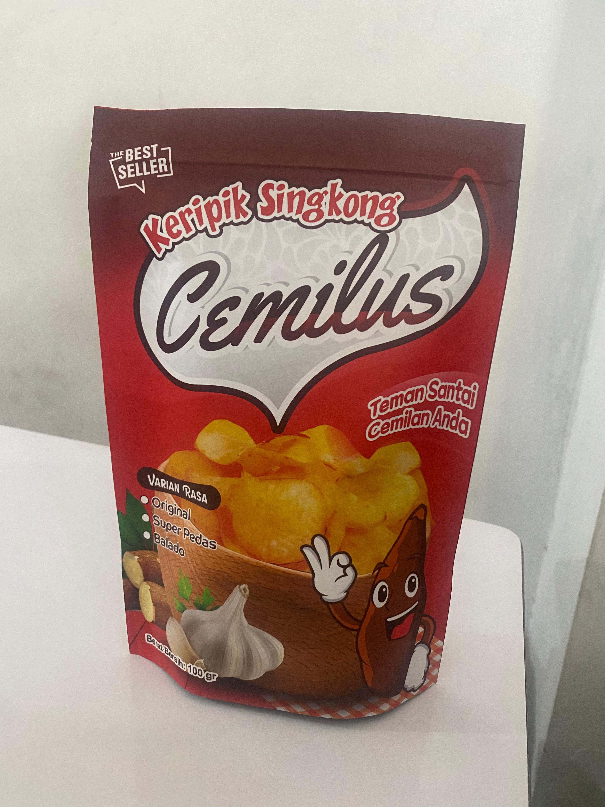

Renyahnya Juara, Rasanya Nusantara!
Keripik Singkong Premium KriukTempe. Dibuat dari kedelai pilihan dan resep rahasia turun-temurun. Dijamin bikin nagih!
Pesan Sekarang!

Kenapa Pilih Kripik singkong?
100% singkong Berkualitas
Menggunakan singkong segar pilihan dari pengrajin lokal.
Tanpa Pengawet & MSG
Camilan sehat alami untuk Anda dan keluarga.
Renyah Tahan Lama
Diproses dengan teknik khusus menjaga kerenyahan maksimal.
Siap Mencicipi Kelezatannya?
Jangan sampai kehabisan! Dapatkan KriukTempe favoritmu sekarang juga.
Pesan via WhatsAppAtau temukan kami di:
Ikuti Kami di Media Sosial
Apa Kata Pelanggan Kami?
"Keripik singkong ini sangat enak! Saya tidak bisa berhenti memakannya!"
- Andi
"Rasa pedasnya pas, sangat cocok untuk camilan!"
- Siti
"Kualitasnya luar biasa, saya pasti akan memesan lagi!"
- Budi
"Keripik singkong barbeque adalah favorit saya! Sangat lezat!"
- Rina
"Saya suka keripik singkong originalnya, renyah dan gurih!"